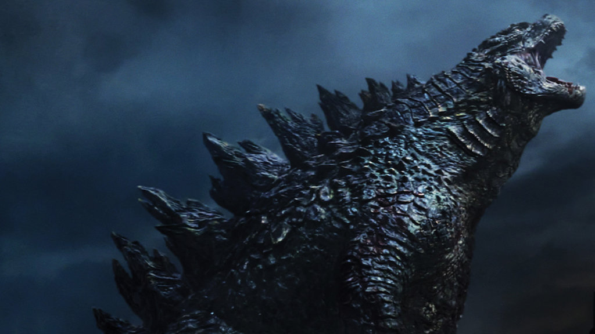
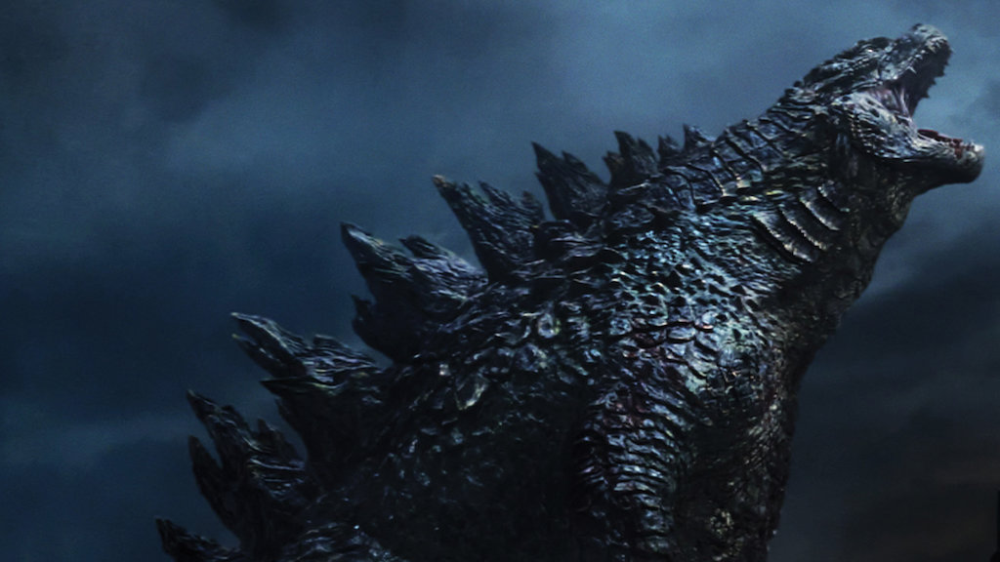

Sobre Godzilla
Godzilla es un monstruo japonés ficticio, que ha protagonizado numerosas películas y se ha convertido en uno de los personajes cinematográficos más famosos y populares. Apareció en pantalla por primera vez en 1954 en la película Godzilla, producida por los estudios Tōhō.
Es una de las referencias más populares de la cultura japonesa del siglo XX, siendo descrita como un enorme dinosaurio mutante, quien genera y salva del caos a Japón y el mundo; por lo que es muchas veces considerado como antihéroe.
Godzilla es la película sobre un monstruo gigante (daikaiju eiga) más famosa de Japón. El verdadero nombre es Gojira, aunque probablemente nunca lo escuches nombrar de esa manera en Occidente. El productor Tomoyuki Tanaka usó como inspiración un accidente en las islas Marshall, con bombas nucleares, donde los peces resultaron contaminados. De esta manera unió la idea de un gorila y una ballena contaminada por radiación formando finalmente a Godzilla.
 
